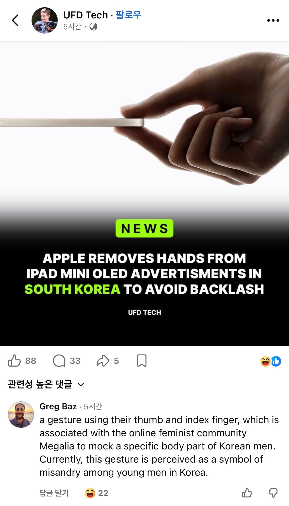

그리고 한 외국인이 저 손가락이 한국에선 신체적으로 남성을 혐오하는
손동작으로 인식되고 있다는 정확한 설명을 댓글로 달아놓음
ㅋㅋ
우리나라 체급 얼마나 커졌길래 이젠 외국인들도 이런 것까지 다 알고 있냐

그리고 한 외국인이 저 손가락이 한국에선 신체적으로 남성을 혐오하는
손동작으로 인식되고 있다는 정확한 설명을 댓글로 달아놓음
ㅋㅋ
우리나라 체급 얼마나 커졌길래 이젠 외국인들도 이런 것까지 다 알고 있냐
자랑스럽다 K-남성 혐오 ㅋㅋ
저런건 괜찮지 싶다가도
괜히 말나오고 귀찮아지느니 삭제하는게 낫겠네 라는 생각이 들긴 함
ㅇㅇㅇ저런거 끝까지 남겨놓는 애들 검거용으로라도 하는게맞음
얼마나 병신같은 짓인지 세계에서 놀림감이 된거로 알수 있지
국가망신인지도 모르고 맨날 손가락장난쳐댓으니
진짜 한국에서만 찾아볼 수 있는 놀라운 고유 문화임 ㅋㅋㅋㅋ
아이러니 하게 해외에서 득본적 있음
어케 알고 스몰 피너스 ㅇㅈㄹ해서 아니라고 확인시켜 준다한게 진짜 먹힘
근데 나 16이라 나름 한국에선 좆부심 갖고 살았는데 바로 ‘노멀’ 소리 들었다ㅜ
한녀 이미지 개박살 ㄷㄷ
'한국 남성이 정말로 성기가 작아서 집게손가락에 발작(triggered)'하고, '인셀들의 불안한 남성성(insecure masculinity)을 조롱하는 것'처럼 받아들이고 있다.
한국 서브레딧
https://www.reddit.com/r/korea/comments/1nddqod/apple_korea_removed_on_iphone_air_ad_thumbnail/?share_id=ics73-VNrdQ93NmDyvMYK&utm_content=1&utm_medium=android_app&utm_name=androidcss&utm_source=share&utm_term=1
아이폰 서브레딧
https://www.reddit.com/r/iphone/comments/1ndwwty/apple_korea_removed_on_iphone_air_ad_thumbnail/?share_id=8WcfzFBay5gljjAqvqyhM&utm_content=1&utm_medium=android_app&utm_name=androidcss&utm_source=share&utm_term=1
이젠 트위터도 번역돼서 개소리컷되던데
엥 아님
저거 한녀들이 만들어낸 손모양이 아니라 해외 페미들이 남자 깔때 생겼던거 한녀들이 수입해온건데
해외에서 직접적으로 pinched fingers 나 pinching hand 를 사용해 온라인에서 비하를 시작한건 유니코드에 등록되어 사용되기 시작한 2019년임.
반면 메갈은 2015년에 출범? 됐고.
그래서 나는 오히려 해외로 수출되었다고 생각하는데
너의 말을 뒷받침해줄 링크나 역사가 있니 ?
흥미로운 주장이라 훑어보고 싶어서.
영멘 자리에서 일어~나라
🤏
그렉이 좀 치노!!
https://www.dogdrip.net/731947910
저거 내가 더쿠에서 보고 원글도 링크타고가서 본건데
아줌마들이 하는 변명이
"우리는 아무것도 안했는데 한남들이 난리펴서 퍼진거다"
이러면서 아주 정확히 무슨내용의 조롱인지 알고있음
지금도 유사한 게시글들 퍼다가 조롱중
외국애들이 한국남자 사이즈에 왜 관심있겠음
한국 페미들이 퍼다날랏으니 알지 ㅋㅋㅋㅋㅋ
나라망신